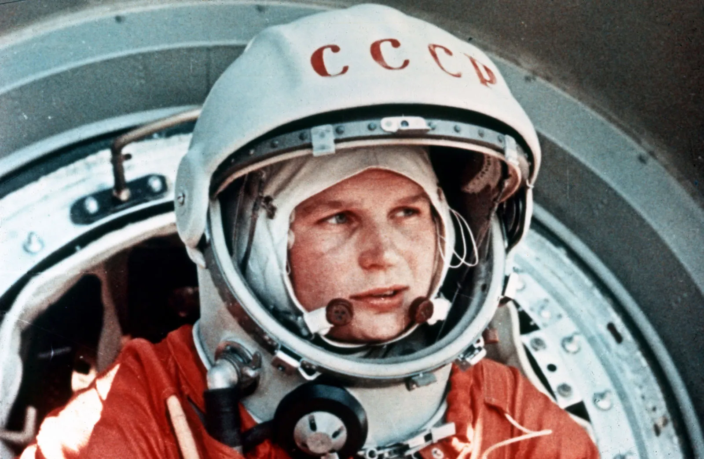
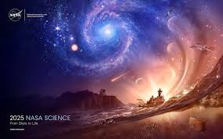
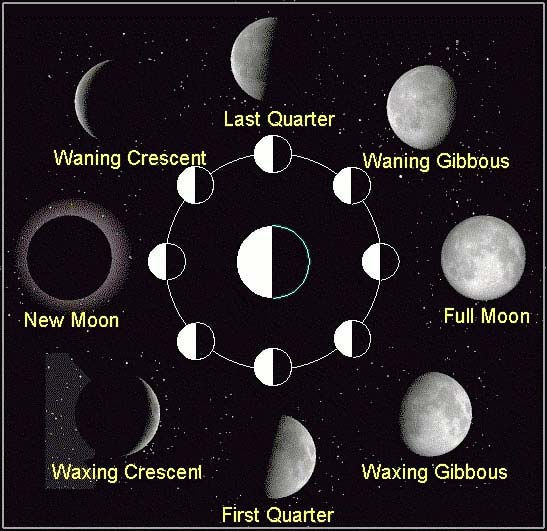
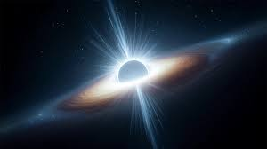

Welcome to Astronomy Gallery
Yuri Gagarin
Yuri Gagarin was the first human to journey into outer space on April 12, 1961, aboard Vostok 1. His flight lasted 108 minutes, orbiting the Earth once.

Neil Armstrong
Neil Armstrong was the first person to walk on the moon on July 20, 1969, during the Apollo 11 mission. His famous words were, "That's one small step for man, one giant leap

Valentina Tereshkova
Valentina Tereshkova was the first woman in space, flying aboard Vostok 6 on June 16, 1963. She spent almost 3 days in orbit and conducted various scientific experiments.
.jpeg)
solar system
The Solar System is a collection of celestial objects, including the Sun and all the objects that
Developer
A developer is someone who writes code and creates software applications, websites, or systems.

Galaxy
A galaxy is a collection of stars, planets, and other celestial objects that are bound by their gravity. Here's a brief overview of the structure and compositionofagalaxy.

Black Hole
A black hole is a region of space where gravity is so strong that nothing can escape it. Here's a

Moon Phases
The phases of the moon are a natural phenomenon that occur on the surface of the Earth's moon. Here's a brief overview of the different phases of the moon and their significance.

Eclipse
An eclipse is a natural phenomenon that occurs when the Sun or Moon passes between the Earth and the Moon. Here's a brief overview of the different types of eclipses and their significance.

Astronaut History
Astronauts are people who fly in space as part of human exploration missions Here’s a short history of astronauts: Early Space Exploration (Pre-Astronaut Era) Before the first astronauts, space exploration was mainly carried out by robotic spacecraft.
.jpeg)
NASA
In the United States, NASA (National Aeronautics and Space Administration) was established in 1958 to compete with the Soviet space program. The first American astronaut to go into space was Alan Shepard on May 5, 1961, aboard Freedom 7, making a suborbital flight that lasted just over 15 minutes..
.jpeg)
EARTH
Earth is the third planet from the Sun and the only known celestial body to support life. It is unique in the solar system due to its abundance of liquid water, diverse ecosystems, and breathable atmosphere. Earth's geological, atmospheric, and biological processes create a dynamic environment that sustains life in a varietyofforms.
.jpeg)
International Star Registry (ISR) owner
The International Star Registry (ISR) was founded by David L. Smith in 1979. The company became one of the first to offer symbolic star-naming services to the public.

White Hole
A white hole is a hypothetical astronomical object that is essentially the opposite of a black hole. While a black hole attracts everything, even light, into it, a white hole is theorized to expel matter and energy, allowing light to pass through it.
.jpeg)
Milky Way
The Milky Way is the galaxy that contains our solar system. It is a spiral galaxy with a diameter of about 100,000 light-years and a mass of about 10,000 times that of the Sun.